IIT M FOUNDATION DIPLOMA FN EXAM QDF1 28 Apr 2024 - 28 Apr 2024
MLF End Term14 questions40 marks6 MSQ · 6 SA · 2 MCQFoundation / Diploma / forenoon / QDF1
Elapsed 00:00
Comprehension passage - the questions below it refer to this
A person went to the market to buy hens. Old hens can be bought for ₹ 200.00 each but young hens can be bought for ₹ 500.00 each. The old hens lay 3 eggs per week and the young hens lay 5 eggs per week. Each egg costs Rs. 11. A hen costs ₹ 50.00 per week to feed. If the financial constraint is ₹ 8000 per week to buy hens and the capacity constraint is that the total number of hens bought cannot exceed 20 per week. The objective is to earn more profit. Let x represent the number of old hens and y represent the number of young hens. Use the above information to answer the given subquestions
Q1MCQ2 marks
Choose the correct Primal optimization problem from the following.
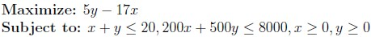
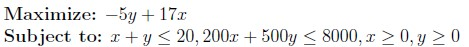
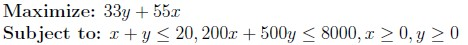
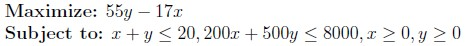
Q2MSQ2 marksselect all that apply
If (x*, y*) is the optimal solution of the primal, u1 and u2 are Lagrange multipliers then which of the following options is/are true?
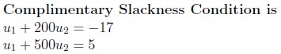
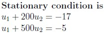
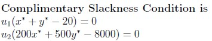
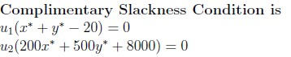
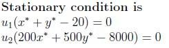
Q3MSQ3 marksselect all that apply
Which of the following options is/are true?
The Given LPP is infeasible.
The Given LPP is feasible.
The optimum value is x = 0 and y = 16
The optimum value is x = 20 and y = 0
Q4SA3 marks
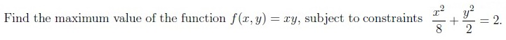
Q5MSQ3 marksselect all that apply
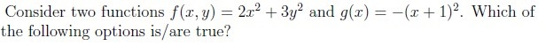
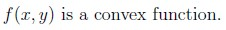
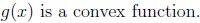
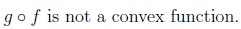
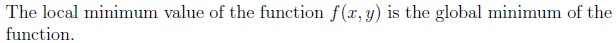
Q6MSQ3 marksselect all that apply
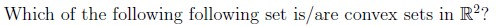
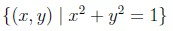
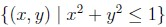
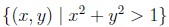
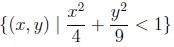
Comprehension passage - the questions below it refer to this
Based on the above data, answer the given subquestions.
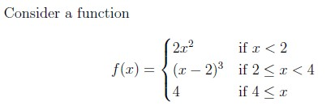
Q7SA3 marks
Find the number of discontinuous points.
Q8SA3 marks
Find the number of points where the function is not differentiable.
Q9MSQ3 marksselect all that apply
Let A be a real symmetric positive definite matrix. Which of the following options is/are true?
The eigenvectors of A may or may not be orthogonal.
If A is similar to a diagonal matrix B, then B is also positive definite.
AT A is not positive definite.
AT A is not similar to a diagonal matrix.
Q10MSQ3 marksselect all that apply
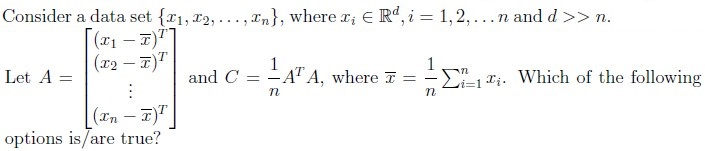
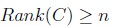
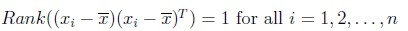
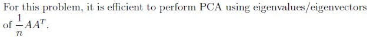
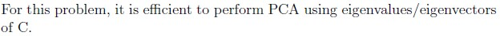
Q11MCQ3 marks
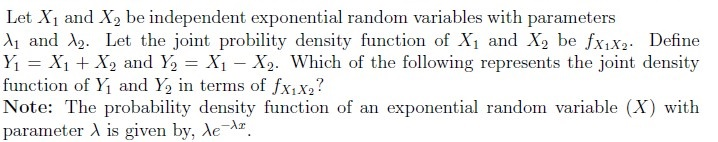
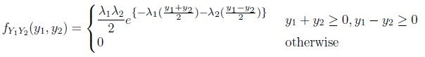
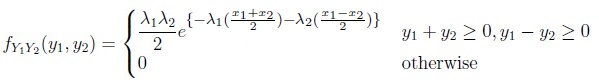
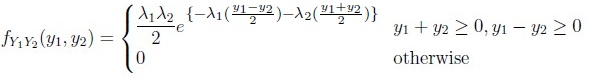
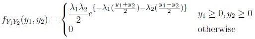
Q12SA3 marks
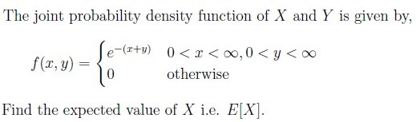
Q13SA3 marks
In a large town, it is estimated that 20% of students own a laptop. A random sample of 400 students is selected from the town. What is the variance of the number of students with the laptops in a given sample?
Q14SA3 marks
A quality control manager at a factory measures the thickness of glass sheets produced. Five randomly selected sheets have the thicknesses(in mm) 10, 8, 11, 9, 12 respectively. Assuming the thickness follows a normal distribution and the variance is known, what is the maximum likelihood estimator (MLE) of the mean thickness, (μ), in mm of the glass sheets?
Auto-generated summary from the source site. Handy as a checklist; the lessons above explain each idea from scratch.
Here’s a structured summary of core topics, concepts, principles, and equations essential for the exam, followed by Mermaid knowledge graphs to visualize relationships.
1. Core Topics & Key Concepts
A. Linear Programming (LP) & Optimization
Key Concepts:
Primal Problem Formulation:
Objective: Maximize/Minimize a linear function (e.g., profit).
Constraints: Linear inequalities (e.g., budget, capacity).
Non-negativity: Variables ≥ 0.
Example (from Q2):
Maximize: 5y−17x (profit function derived from egg sales minus costs).
Subject to:
x+y≤20(capacity constraint),
200x+500y≤8000(budget constraint).
Feasibility & Optimality:
Feasible Region: Set of points satisfying all constraints.
Optimal Solution: Vertex of the feasible region (use corner point method or simplex algorithm).
Example (from Q4): Optimal solution is x=0,y=16.
Lagrange Multipliers & KKT Conditions:
Complementary Slackness: For active constraints, multipliers ui=0; else ui=0.
u1(x∗+y∗−20)=0,u2(200x∗+500y∗−8000)=0.
Stationary Condition: Gradient of Lagrangian = 0.
∇f(x∗,y∗)+u1∇g1(x∗,y∗)+u2∇g2(x∗,y∗)=0.
Equations:
Profit Function Derivation (Q2):
Revenue: 11×(3x+5y) (eggs sold).
Cost: 50(x+y) (feeding) + 200x+500y (purchase).
Net Profit: 11(3x+5y)−50(x+y)−(200x+500y)=−17x+5y.
B. Convexity & Optimization
Key Concepts:
Convex Functions:
Definition: f(λx+(1−λ)y)≤λf(x)+(1−λ)f(y) for λ∈[0,1].
Examples (from Q6):
f(x,y)=2x2+3y2 (convex, as Hessian is positive semi-definite).
g(x)=−(x+1)2 (concave, not convex).
Convex Sets:
Definition: For any x,y in the set, λx+(1−λ)y is also in the set.
Examples (from Q7):
Convex: x2+y2<1 (interior of a circle), 4x2+9y2<1 (interior of an ellipse).